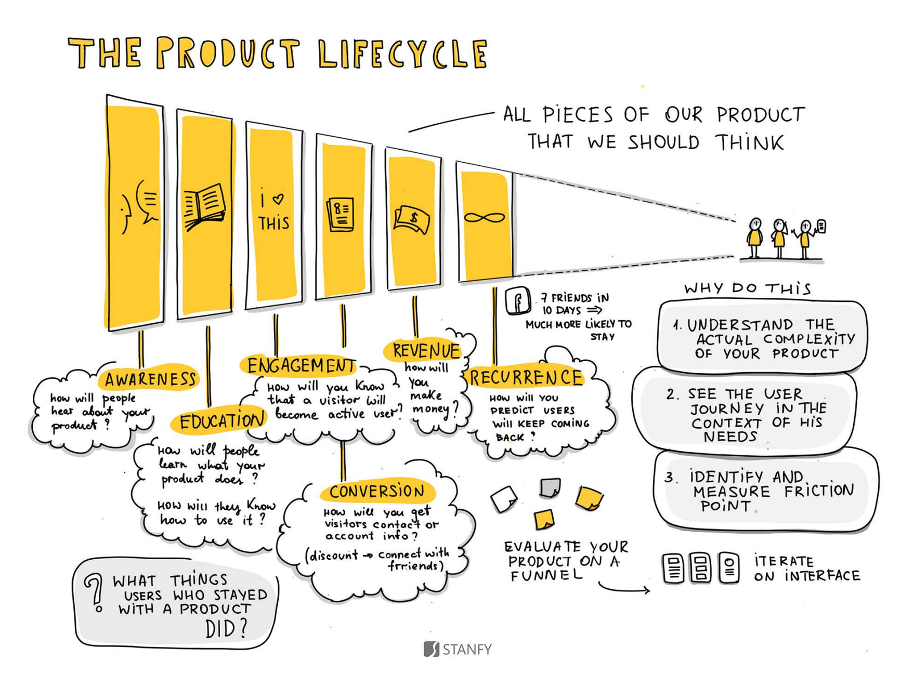
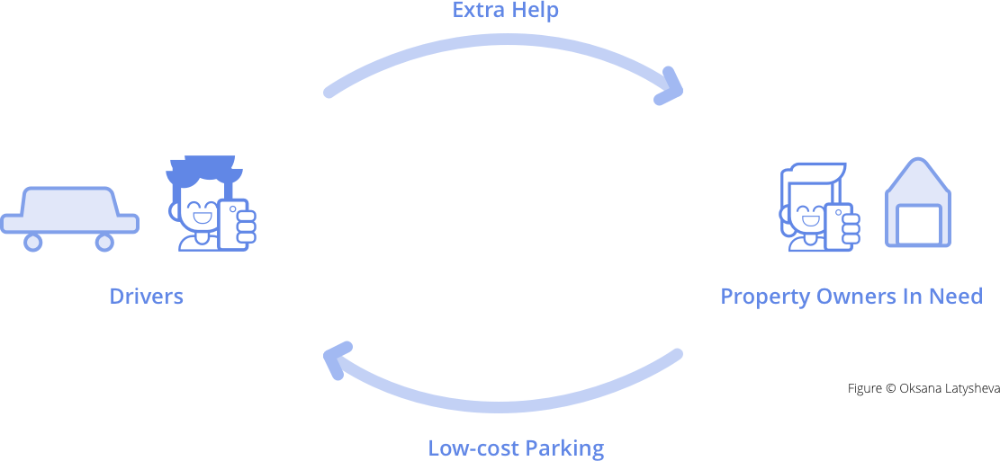

Park Helper
Mobile app to connect property owners and people looking for parking spots
Mobile app Peer economy UX design UI design
For this project, we were challenged to build a product for peer economy, bringing two different user roles, with different goals, together in competition of a task. Our team chose to design for people who have a parking space they might want to share and people who could use the parking space. The challenge here is how to let the two peers are not afraid of using a non-traditional service and bring value to them. Park Helper is our solution. The service focuses on long-term parking and delivers monetary, reassurance, and help value to the two parties.
Date: Oct - Nov 2016, 3 weeks
Team: Xiaonan Chen, Justin Fanzo, Marc Estruch Tena, Angel Yu
My Role: Researcher, Designer
01 Research
What do people care about when lending property to strangers or using a stranger’s parking space?
We conducted 12 interviews in Shadyside and Oakland of Pittsburgh, 5 with property owners and 7 with drivers who look for parking spots. For property owners, we asked their acceptance and concersn about lending their parking space to strangers; their opinions of getting extra income by lending personal space out. For drivers, we asked them their bad experience when looking for parking space; their acceptance and concerns about using non-traditional parking space; their preference when choosing a parking space.
12
Interviews
5
Property Owners
7
Drivers
Property Owners
I’d love to rent only if it does not interfere my parking time. Time is hard to control.
I will be more willing to lend out if I know the person.
There’s personal stuff in my parking lot. Strangers may get information of the house.
It’s smart to have someone in the driveway if people are in vacation. There’s value in having the illusion of somecone coming and going. It’s not about the money, it’s about security.
Drivers
My top concerns about parking in general are cost, distance, and safety.
Once I parked in an illegal spot and got towed. Parking space is limited in big cities.
It could be a bit insecure to get into a stranger’s closed space, especially for female.
The service should be reliable and trustworthy, creating a network with people who will be more likely to use your spot.
How do other companies ease users’ worries on interacting with strangers in peer economy?
We also conducted secondary research and cometitive analysis to see how other products are designed to ease users’ worry when using stranger’s service and to find the right market position for our design.
Identity Vetting
this is a paragraph.this is a paragraph.this is a paragraph.this is a paragraph.this is a paragraph.
Rating System
this is a paragraph.this is a paragraph.this is a paragraph.this is a paragraph.this is a paragraph.
Community Building
this is a paragraph.this is a paragraph.this is a paragraph.this is a paragraph.this is a paragraph.
02 Synthesis
6 Key Insights
Based on our findings through interview and secondary research, we gained 6 key insights:
Users need the other party’s information be checked to build up trust. Vetted personal information could ease users’ worries, which is also common seen in other peer economy service, like Airbnb and Uber.
Easy communication is needed in using peer-to-peer parking service. Users hope the communication cost is as little as possible.
Property owners are more open to lend parking space in long-term parking. Because long-term parking is less influenced by schedule changing and therefore causes less parking time confliction.
Driveways renting is prefereed by both drivers and property owners. They want to save the trouble of exchanging keys and ensure personal or property security and privacy.
Parking fee is a nice-to-have income source for property owners, but is a priority consideration for drivers. Drivers hope the parking cost could be as little as possible, while property owners are less sensitive towards ths issue.
Property owners need others to help check their house when they’re absent to get reassured. This creates sense of security for property owners.
Based on these insights, our team decided to focus only on weekly or long-term parking, which is 7 days or longer, and driveway parking. We hoped to build a service to enable drivers to provide extra help (like house check) to property owners in need in exchange for low-cost parking space. Also, our service needs to create feeling of trust and security to get both parties reassured.
03 Ideation
Based on these insights, our team decided to focus our design on two aspects:
How might we design to build up trust?
How might we design to enable drivers to exchange help for cheap parking in an effortless way?
Combining given course materials and our interview findings, we created two personas and used storyboards to help us better empathize user needs.
After multiple rounds of discussion and brainstorming as well as 20 exploratory scenarios, our team further narrowed down our targeted users to:
(1) Drivers who are looking for cheap parking spots;
(2) Property owners who need others to help check their house or provide other assistance, like families on vacation, mobility difficulties elderly, sick person, etc.
Based on the needs of these two groups, we finally settled on the idea of designing a weekly-based parking service that requires drivers to complete daily simple tasks to exchange cheap parking spots. The following key features are included to ensure the process is seamless and effortless for both parties.
Intuitive Design. Easy onboard and usage for non-expert mobile users.
Customized parking log. Property owners can select from a list of simple tasks to ask the drivers to complete everyday. These tasks require little effort to do, such as checking mailbox, checking front door, etc.
Location-sensing reminder. The app senses whereabouts of the driver and automatically reminds him or her to log after the parking.
Request extra help and give discount. Property owners can add extra services that drivers can perform for extra discount. Such tasks are voluntary, and the amount of discount is set by the property owner.
04 Prototype
Based on the interaction flow we had, we then created the navigation map to guide later design. Due to the time limitation, we were only required to have the MVP (Minimum Viable Product) for idea communication. Below is the hi-fi prototype of the chosen screens to convey the idea.
Navigation Map